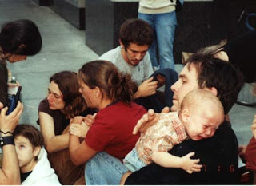

"That's why you shouldn't bring kids to protests."
This taunt, which issued from the sneering lips of an
armored riot policeman, struck Don Joughin with the force of a billyclub as he
tried to comfort his children – a three-year-old and a newborn – after they had
been showered with a chemical agent by a riot policeman.
That assault did not take place during any of the recent “Occupy”-inspired
protests. It occurred in August 2002, during a fundraising visit by then-President
George W. Bush to Portland, Oregon.
In keeping with then-recently established “security”
protocols, local police were deployed in riot gear to keep
demonstrators confined inside "free speech zones" located several
blocks away from the motorcade route. Joughin, who was accompanied by his wife
and three children, was present when police unleashed a pepper-spray fusillade
against a small group of protesters who had taken a few steps outside the
designated protest zone.
After the police attack began, Joughin and his family attempted to
leave, but found themselves penned in. Acting on the tragically innocent
assumption that the police were present in order to keep the peace, Joughin
politely asked the officer obstructing an exit how he and his family could
leave the turbulent intersection. "He pointed and said to exit to the
[northeast], into the spraying police opposite him," Joughin recalled.
 |
| Don Joughin comforts his son after the infant suffered a pepper spray assault by a Portland cop. |
With his family in danger of being trampled by protesters fleeing the chemical barrage, Joughin asked the officer to let him and his
family through. "He looked at me, and drew out his can from his hip and
sprayed directly at me," Joughin recalled. He didn't bear the brunt
of that criminal assault, but his three-year-old caught some of the blast. The
assailant then turned on Joughin's wife and the infant "and doused both of
their heads entirely from a distance of less than three feet," Joughin testified.
As his children were screaming in agony, Joughin pleaded with the cops to allow him and his family to leave and seek help. They responded by closing ranks and blocking the Joughin family's escape. They didn't relent until someone in "authority" gave them permission to set them free. The last thing Joughin and his traumatized family heard as they left the scene was the sadistic taunt hurled by one of the tax-devouring thugs who had assaulted the children with a chemical weapon.
As his children were screaming in agony, Joughin pleaded with the cops to allow him and his family to leave and seek help. They responded by closing ranks and blocking the Joughin family's escape. They didn't relent until someone in "authority" gave them permission to set them free. The last thing Joughin and his traumatized family heard as they left the scene was the sadistic taunt hurled by one of the tax-devouring thugs who had assaulted the children with a chemical weapon.
While millions of Americans have been horrified by recent incidents of armored police officers beating and pepper-spraying unarmed,
unresisting protesters, those nauseating spectacles are neither novel nor
particularly rare. In “Securitizing
America: Strategic Incapacitation and the Policing of Protest Since the 11
September 2001 Terrorist Attacks,” a heavily sourced paper recently
published in the journal Sociology
Compass, Patrick F. Gillham of the
University of Idaho observes that current police doctrine dictates that public
protests are to be treated as “security threats,” and dealt with using methods
inspired by “a new penology philosophy.”
From that perspective, every public demonstration -- however peaceful and orderly it might be -- is to be treated
as the equivalent of a prison riot. This means that police are free to employ
every available means – pre-event surveillance, pre-emptive arrest,
hostage-taking, and the use of incapacitating “less-lethal” weaponry – in order
to “neutralize” people suspected of being “disruptive” elements.
| Illegal mass arrest in St. Paul, Minnesota. |
Under the “strategic incapacitation” model, Gillham notes, “police
often refuse to communicate at all with possible or actual transgressive
protesters except to issue commands once
protest events have already begun.” (Emphasis added.) It’s not enough to
confine protest to “free-speech zones”; the right to assemble itself is subject to
modification or revocation without prior notice – even in the absence of disorderly
behavior on the part of the protesters.
Typically, phalanxes of riot police will appear and slowly
herd protesters into a confined area. An announcement will be made that the
demonstration has been designated an “unlawful assembly,” and shortly
thereafter the attack will begin, typically culminating with either mass
arrests, needless injuries, or some combination thereof.
A September 2001 anti-war protest in Washington, D.C.
offered the first opportunity to field-test this approach. A small group of
anarchists were driven into an improvised holding area by riot police, where
they were literally held as hostages: “After 2 hours of detention, police
conveyed the terms under which protesters would be released to a neutral third
party of legal observers and not to the detained protesters.”
Two years later, during the Free Trade Area of the Americas
summit in Miami, “police not only pre-emptively arrested perceived
transgressive protesters, they also arrested scores of union members and
student activists walking to permitted events, as well as credentialed reporters
and curious bystanders,” recalls Gillham. Most of those arrested had not been
ordered to disperse, and had violated no law – including a draconian
anti-assembly law that had been enacted by the city government just days prior
to the summit. In addition, Gillham observes, “Bails were set high as a further
way to keep those arrested off the streets.”
The same approach was used at both the Republican and
Democratic national conventions in 2008. In one particularly memorable
application, 284 people were arrested at a public park in St. Paul, Minnesota on
Labor Day 2008 during the Republican Convention. A huge contingent of riot
police – supplemented by the National
Guard’s JTF-RNC, and equipped with chemical munitions and gas masks -- cut
off access to the park, which was bordered on one side by train tracks and the
other by a river. This turned the park, however temporarily, into a
huge open-air detention center.
An amplified version of the same tactics was employed by
police in Pittsburgh when the 2009 G-20 summit brought the crème de la scum of
the world’s criminal class to that city.
As helicopters plied the night air and serried rows of
armored riot police assembled, a robotic voice announced:
“By order of the chief of police, this has been declared an unlawful assembly.
I order all those assembled to immediately disperse. You must leave the
immediate vicinity. If you do not disperse, you may be subject to arrest,
and/or other police action” – the latter being a euphemism for summary
punishment through “the use of riot control agents and/or less lethal
munitions.”
Once again, protesters were ordered to leave, and threatened
with severe reprisals if they didn’t – only to find that the police already had
them surrounded and were determined to arrest and assault at least some of
them.
Those crackdowns, in keeping with the “strategic incapacitation”
doctrine, were not employed in response to criminal violence, or to deal with
any impending threat of the same. Gillham points out that under the new
approach “arrests are selectively applied to neutralize known or suspected
transgressive actors often times before any crimes are committed.”
The same is true of aggressive violence employed by riot
police, notes Gillham: “Less-lethal weapons such as tear gas, pepper spray,
Tasers, rubber bullets, wooden missiles and bean bag rounds are now the weapons
of choice…. Evidence suggests that police use these weapons as a means to
temporarily incapacitate potentially disruptive protesters and repel others
away from areas police are trying to defend such as entrances and exits to
secured zones.”
Of course, once the riot police appear and the decree goes
forth that a given protest is an “unlawful assembly,” the protest area itself
is designated a “secure zone,” and those within it can only leave with the
permission of their captors.
| Thugswarm: Riot police assault female student in Pittsburgh. |
All of this is manifestly the product of a military mind-set
– one better suited to a military prison camp than a battlefield. The behavior
of domestic police in dealing with political demonstrations is nearly identical
to that of specialized “Immediate Reaction” forces (IRFs) deployed in military
prisons such as those at Guantanamo Bay and Bagram Air Force Base in
Afghanistan.
In his memoir, Five Years of My Life: An Innocent Man in Guantanamo, Turkish national Murat Kurnaz – who was kidnapped by Pakistani bounty hunters and sold into U.S. custody for $3,000 – describes his captivity in Gitmo (as well as Bagram) as a supposed “unlawful combatant." Any violation of the arbitrary -- and ever-changing -- rules of prisoner conduct provoked an attack by the IRF, a unit consisting of "five to eight soldiers with plastic shields, breastplates, hard-plastic knee-, elbow-, and shoulder-protectors, helmets with plastic visors, gloves with hard-plastic knuckles, heavy boots, and billyclubs." In other words, they were accoutered exactly like the domestic riot police who have become such a familiar presence in recent weeks.
Breaking a rule wasn’t a prerequisite for a visit from the IRF. The team would be summoned to inflict punishment for any act of defiance -- such as an insult hurled at an abusive guard, or even an attempt to exercise. Typically the IRF would soften up the target by infusing the cell with a liberal dose of Megyn Kelly’s much-discussed “food product” – weaponized capsaicin. Once the prisoner had been left entirely incapacitated, the IRT would swarm him to deliver a beating.
Former military interrogator Erik Saar provides a parallel account
in his remorseful memoir, Inside the Wire.
“The five IRF-team MPs lined up outside the cell door,”
writes Saar. “Starting in the back, they each shouted `Ready!’ and one by one
slapped the shoulder of the next soldier up. The first soldier opened the door
and directed a good dose of pepper spray at the detainee, then started to back
him into a corner with his shield. But the captive managed to swipe the shield
away and tried to kick the second soldier in line. He landed a good blow to the
shoulder, but before he could put his foot down the third soldier, thinking
fast, grabbed it and jerked. The detainee’s body rose in the air and came
crashing to the metal floor.”
“All five MPs swarmed over him,” continues Saar’s account. “One
was responsible for securing his head, and the other four were supposed to take
one limb each. The detainee was kicking and squirming, fueled by his hostility.
Mo [an Army translator] was shouting to him in Arabic to stop resisting. One of
the stronger soldiers who had a solid grip on one arm was punching him in the
ribs….”
Nearly identical tactics were used at “Camp
Greyhound” in New Orleans, an improvised jail modeled after Gitmo and operated
by FEMA in the wake of Hurricane Katrina. Among those imprisoned there was
Syrian-American businessman Abdulrahman Zeitoun, who was seized in his own home
by National Guardsmen, imprisoned on unspecified charges, and escaped with his
life only because of the providential intervention of a Christian clergyman who
happened to visit his cell after Zeitoun had been transferred to the Elayn Hunt Correctional
Center.
For Zeitoun and the other prisoners, the Camp Greyhound
experience was one of tedium punctuated by sheer terror. The guards exploited
any excuse to inflict exemplary "discipline" on the detainees, most
of whom had been arrested for violating curfew or similar petty matters.
"Always the procedure was the same," recalled David Eggers in his book Zeitoun; "a prisoner would be removed from his cage and dragged to the ground nearby, in full view of the rest of the prisoners. His hands and feet would be tied, and then, sometimes with a guard's knee on his back, he would be sprayed directly in the face" with pepper spray. "If the prisoner protested," continued Eggers, "the knee would dig deeper into his back. The spraying would continue until his spirit was broken. Then he would be doused with [a] bucket and returned to his cage."
The victims of this pointless and whimsical cruelty included one disturbed man with the intellectual and emotional capacity of a child who was "punished" because he displayed the irrepressible symptoms of mental illness.
"Always the procedure was the same," recalled David Eggers in his book Zeitoun; "a prisoner would be removed from his cage and dragged to the ground nearby, in full view of the rest of the prisoners. His hands and feet would be tied, and then, sometimes with a guard's knee on his back, he would be sprayed directly in the face" with pepper spray. "If the prisoner protested," continued Eggers, "the knee would dig deeper into his back. The spraying would continue until his spirit was broken. Then he would be doused with [a] bucket and returned to his cage."
The victims of this pointless and whimsical cruelty included one disturbed man with the intellectual and emotional capacity of a child who was "punished" because he displayed the irrepressible symptoms of mental illness.
| FEMA camp survivor: Abdulrahman Zeitoun with his family. |
These ritual acts of sadism, Eggers observes, were "born of a combination of opportunity, cruelty, ambivalence, and sport." They were intended to torment the other prisoners, most of whom -- like Zeitoun – were possessed of more decency than their captors and thus left sick with rage by the spectacle of helpless men being tortured.
"Under any normal circumstances [Zeitoun] would have leapt to the defense of a man victimized as that man had been," observes Eggers. "But that he had to watch, helpless, knowing how depraved it was -- this was punishment for the others, too. It diminished the humanity of them all."
The same treatment continued once Zeitoun was transferred from the makeshift FEMA detention camp to a “regular” prison. For more than two weeks he and his cellmate were abused, insulted, humiliated, and treated to a visit from a Gitmo-style "Extreme Repression Force" (ERP). Swaddled in riot gear, wielding ballistic shields, batons, and other weapons, the ERP "burst in as if [Zeitoun] were in the process of committing murder," writes Eggers. "Cursing at him, three men used their shields to push him to the wall. As they pressed his face against the cinderblock, they cuffed his arms and shackled his legs."
After heroically subduing an unresisting man -- who by this time was dealing with an infected foot and a mysterious kidney ailment -- the ERP tore apart the cell before forcing the victim to strip and submit to another body cavity search. By some oversight, the ERP neglected to use pepper spray on the innocent and helpless man. All of the prisoner-control tactics used in Gitmo and "Camp Greyhound" have been employed against peaceful protesters in New York, Oakland, and elsewhere
Civil libertarians are understandably concerned about sections 1031 and 1032 of the proposed
National Defense Authorization Act, which would authorize
the indefinite military detention of Americans – including those seized
here in the United States – who are suspected of terrorism. That abhorrent
measure represents an enhancement of current policies and procedures, rather
than an abrupt departure from them. Whether or not the Senate approves the
NDAA, the people in charge of Regime Security already consider this country to
be one vast military prison, and are willing to act on that assumption whenever
the opportunity presents itself.
Obiter Dicta
Anyone who has donated to Pro Libertate and is still awaiting a copy of Global Gun Grab, please contact me -- WNGrigg [at] msn[dot] com -- and I will get it to you as quickly as possible. Thank you for your generosity, and your patience.
Your donations are still very much needed, and deeply appreciated. Thank you!
Dum spiro, pugno!